Lucy

Lucy is a 17-year-old calico that I’ve had since I was 5, she has pretty much grown up with me my whole life. Even though she’s old she’s still kickin’ it and enjoys running around the house at 4am.
Her favorite foods include anything but her kibble. She enjoys sunbathing and long naps, along with lots of petting. However, she hates getting her stomach rubbed.
Photo Gallery
 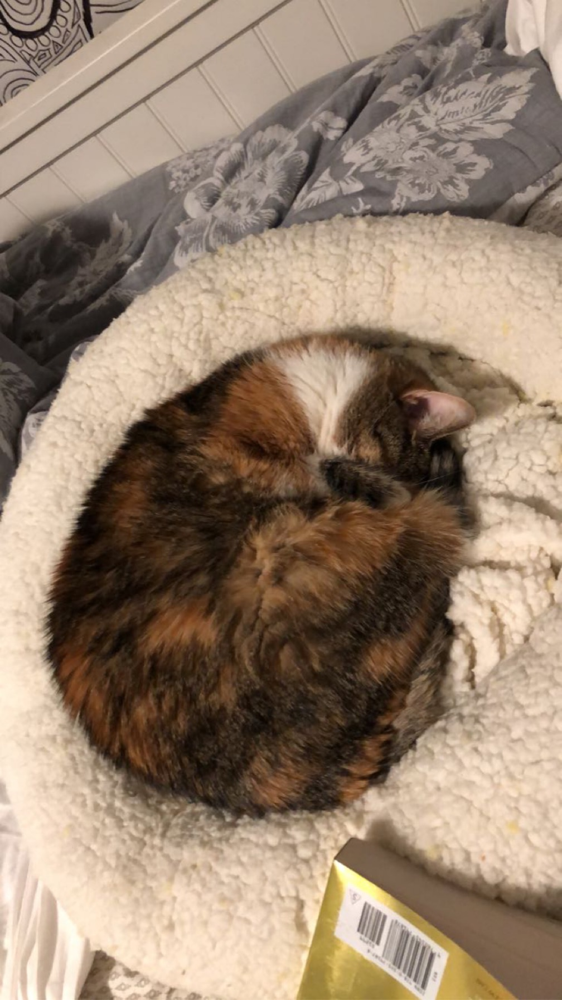
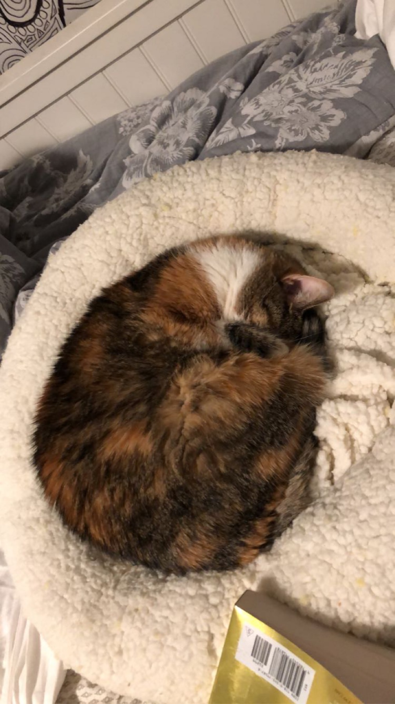


Likes
- Sleeping
- Food
- Her bed
Rosie
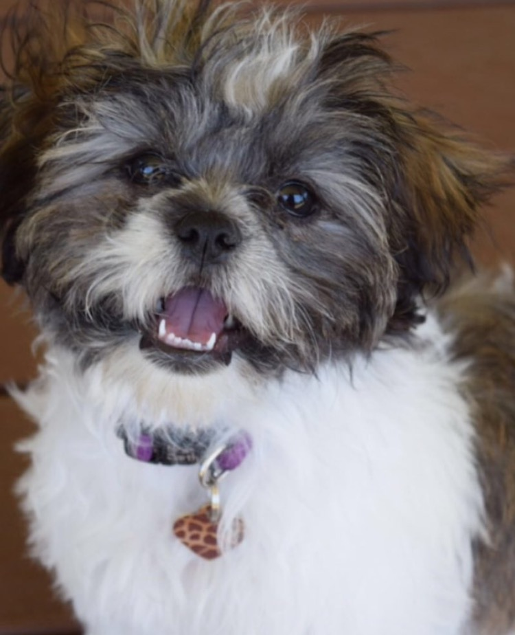Rosie is a small but super energetic dog. Whenever someone comes to the house she is very quick to run up and greet them. She loves to play fetch and will not leave you alone with her toys as she begs you to play with her.
Rosie is also a wonderful lap dog. If you sit on the couch she is quick to find a spot next to you. If you wear a blanket over your legs, you’ll find her laying on your legs. She loves to cuddle and loves to be pet so she will always be right up on you.
Photo Gallery

 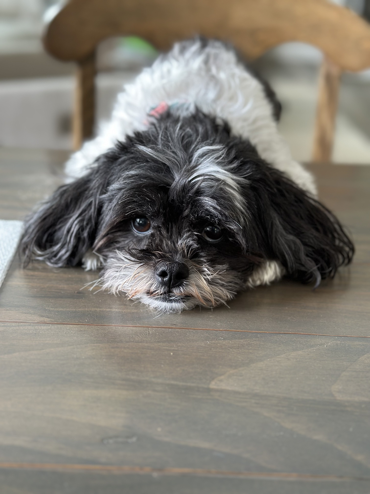
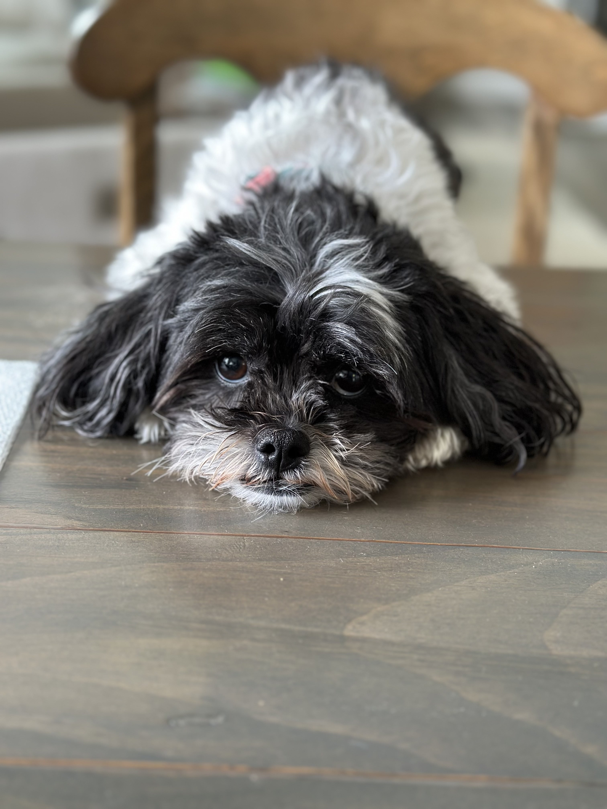

Likes
- Treats
- Fetch
- Cuddles
Honey

Honey’s favorite thing in the world is swimming. Even if it is the middle of January and half of the lake is frozen, Honey will be in the water. She is a smart swimmer, so when my brother and I go underwater, she will follow our air bubbles and be waiting for us when we come up for air.
While most dogs like to chase balls or sticks, Honey likes to chase rocks. She will even chase rocks into the water and stick her whole face in the water to try and find the rock thrown. Chasing rocks is her main form of exercise right now as she refuses to go on walks from our house. If we drive her to another spot and walk from there, Honey will go on a walk but she refuses to leave our driveway when we try to walk from home. Finally one other Honey-ism is that her safe place is bathtubs. Many times our family has woken up in the middle of the night and found Honey is a bathtub.
Photo Gallery


Likes
- Likes rocks
- Likes food
- Likes attention
Sofie

Sofie is a 15-year-old Beagle mix. Her favorite spot in the house is the living room couch. She loves to go outside, sometimes too much, leaving us to open the door for her constantly. Sofie loves freshly cut grass, she rolls around in it for hours after it gets cut.
Sofie is very old, she joined our family when I was still in a car seat. Sofie loves the weekends because she gets her favorite treat, a fried egg. Sofie loves long walks around the lake or on the trail, where she can be let free to run to her hearts content.
Photo Gallery
 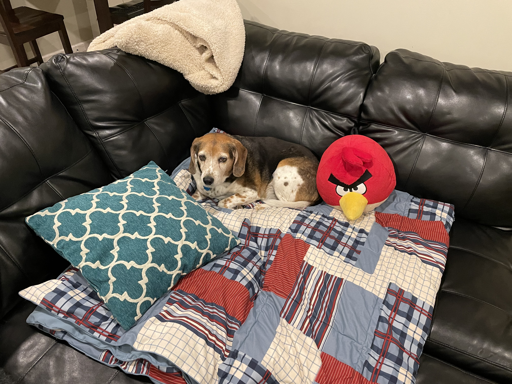
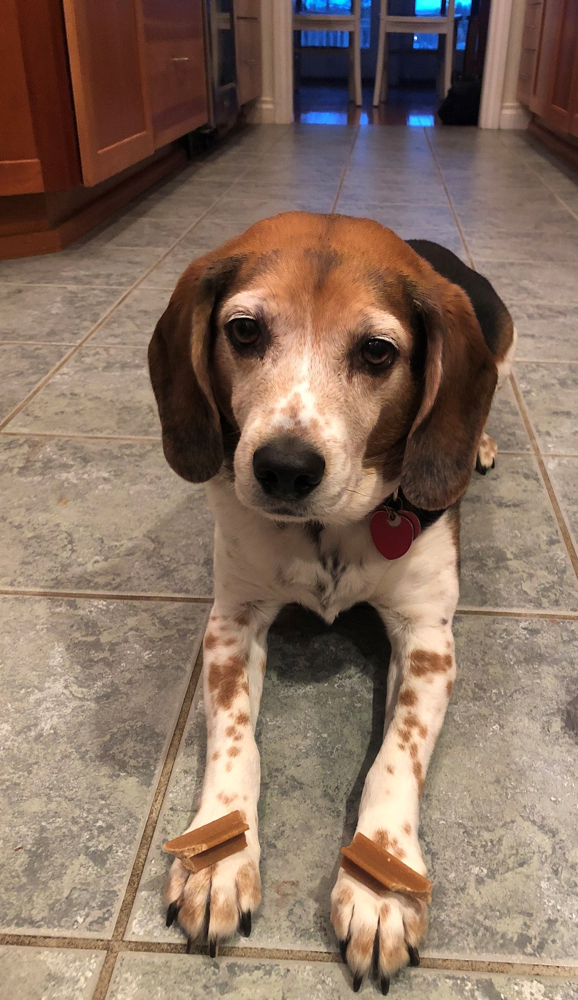
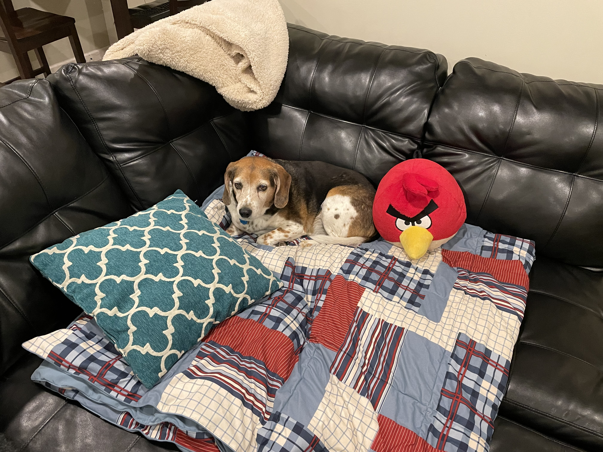
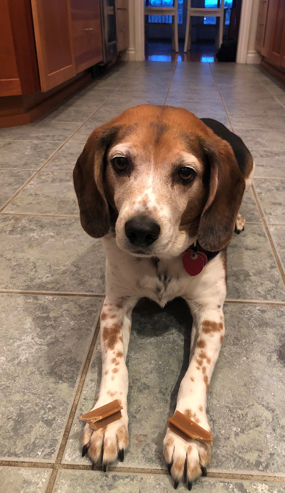
Likes
- Fried eggs
- Peanut butter
- bacon strips
Finn

Finn is a 7 year old grey cat. I feel like no one really knows cat breeds so I’m just gonna go with grey. He loves doing tricks for treats and his favorite is giving high fives to people. He might as well be a dog as he loves the outdoors and meeting new people. I can only describe him as goofy and chaotic.
Finn’s biggest enemy is his vet. I don't know whether or not it’s because his vet is an MSU alum, but he doesn’t like him. He actually has to be prescribed a sedative before he goes to the vet office because he’ll suddenly act like he was never a house cat for 7 years.
Photo Gallery
 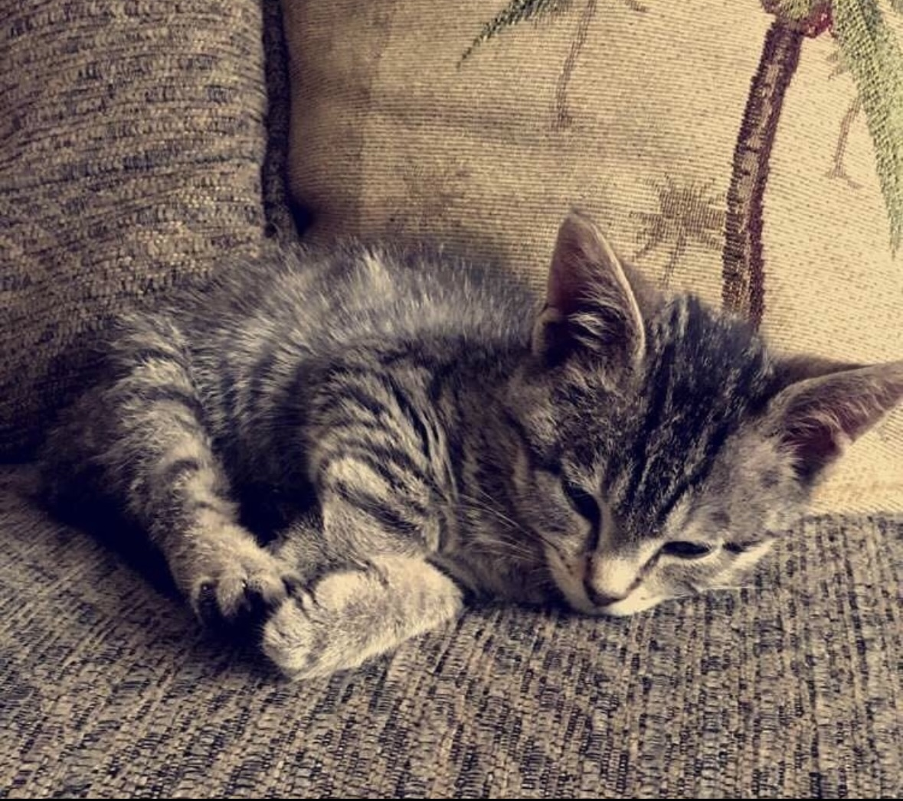
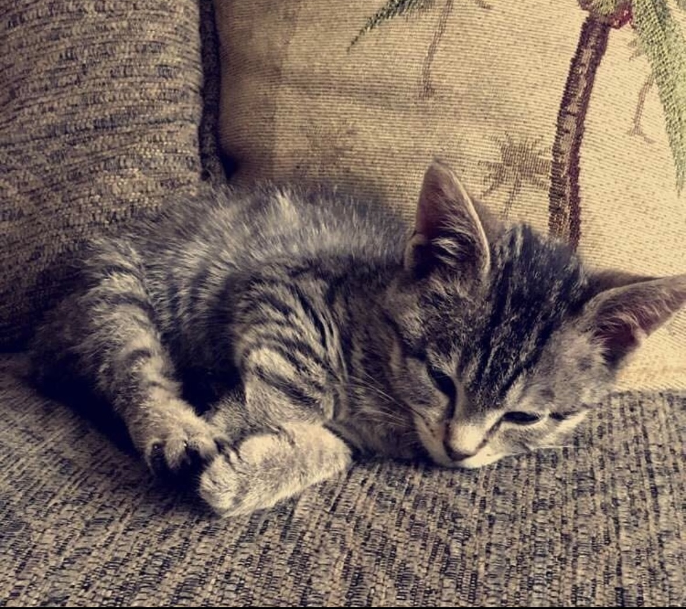


Likes
- Treats
- Head Rubs
- Sleeping in cardboard boxes